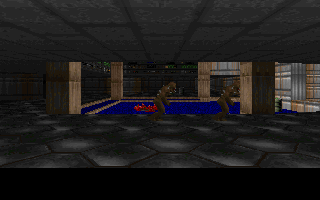

DOOMVIZ
A VST3/AU music visualizer powered by the Doom (1994) renderer


What Is This?
DoomViz is an open-source VST3/AU plugin that embeds the Doom (1994) software renderer and drives it from real-time audio and MIDI input. Load it as an effect in your DAW, route audio through it, and watch E1M1 come alive with your music.
Audio passes through unchanged — DoomViz is purely visual.
Visualizer Modes
Kill Room
Auto-navigates E1M1 with collision detection. Audio onsets spawn monsters. Player faces and shoots nearby enemies when audio is playing. Sector lighting pulses with RMS level.
Sprite Spectrum
2D frequency visualizer using Doom palette colors. 8 bands rendered as colored bars, scaled vertically by amplitude. Dark background with real-time audio response.
Analyzer Room
Auto-navigates E1M1 while the FFT spectrum is rendered onto the NUKAGE1 floor texture as a real-time bar graph with green-to-red gradient.
Switch scenes by sending MIDI Program Change (0, 1, or 2) to the plugin.
Signal Flow
Audio Analysis
- FFT — 2048-sample window, Hann windowed, 16 log-spaced frequency bands (20Hz–20kHz)
- RMS — Time-domain level with envelope follower (configurable attack/release)
- Onset detection — Spectral flux transient trigger
- MIDI — Note velocity, CC values, program change, MIDI clock
YAML Routing
Signal routing is configured via YAML. Each input channel defines a source (audio band, onset, MIDI CC, etc.) with gain/offset/smoothing. Routes map inputs to scene parameters with scale, offset, and blend modes (replace, add, multiply, max).
inputs:
kick_env:
source: audio
mode: band_rms
band: [20, 200]
smoothing: 0.05
gain: 2.0
routes:
- from: kick_env
to: sector_light.all
scale: 1.0
Building
Requires macOS with Apple Clang and Flox for dependency management.
git clone --recursive <repo-url>
cd doom_viz
flox activate
mkdir -p build && cd build
cmake .. -DCMAKE_C_COMPILER=/usr/bin/clang \
-DCMAKE_CXX_COMPILER=/usr/bin/clang++
cd ..
# Build and install VST3
flox activate -- cmake --build build -j1 --target DoomViz_VST3
cp -R build/DoomViz_artefacts/VST3/DoomViz.vst3 \
~/Library/Audio/Plug-Ins/VST3/
codesign --force --deep --sign - \
~/Library/Audio/Plug-Ins/VST3/DoomViz.vst3
Tech Stack
- Doom renderer — Stripped linuxdoom-1.10, ported to 64-bit macOS
- Plugin framework — JUCE (VST3, AU, Standalone)
- Config — yaml-cpp
- Rendering — 320×200 indexed framebuffer → RGBA → OpenGL texture (nearest-neighbor)